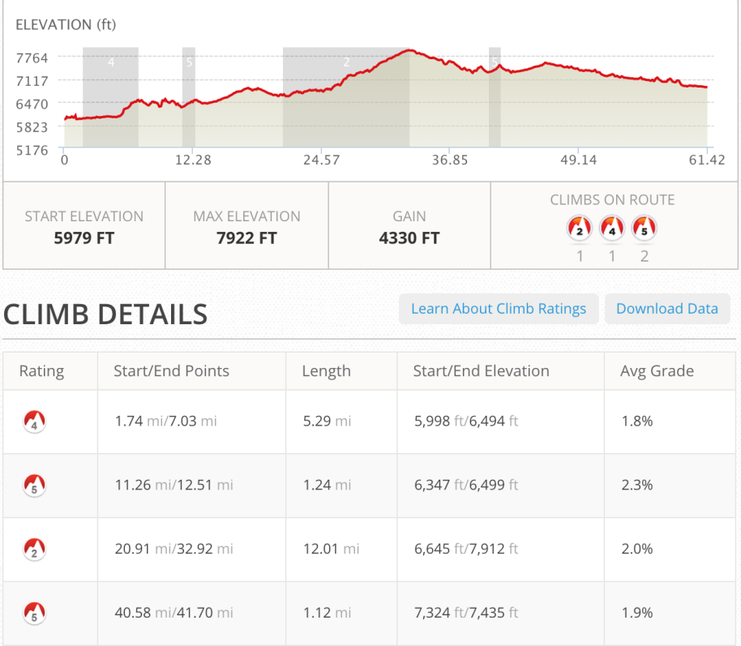
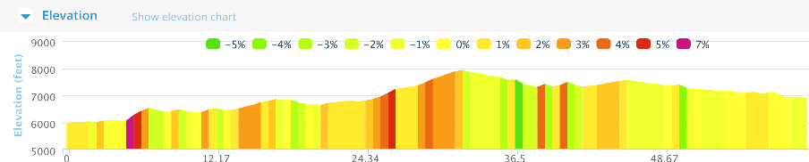
Abiquiu Inn
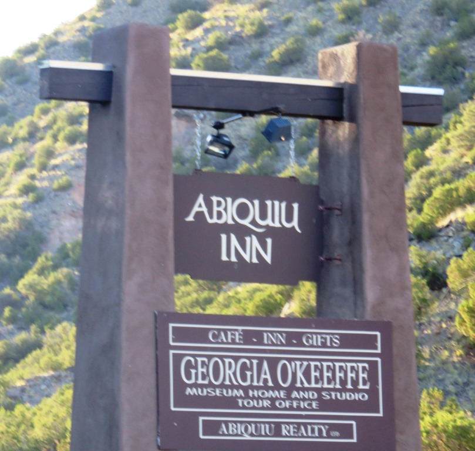
Abiquiu Inn was a real nice place to spend an afternoon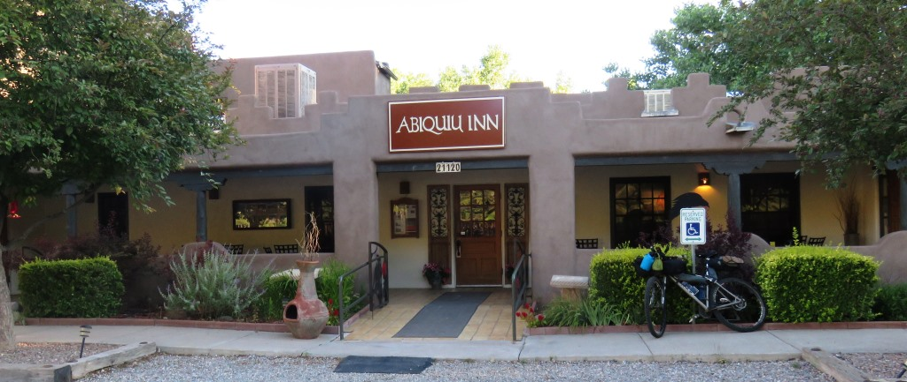
A bit expensive but they gave me a discount.Abiquiu to the Reservoir
When I left the Abiquiu Inn I didn't realize the layers which i had seen the previous day were only go to be even better.
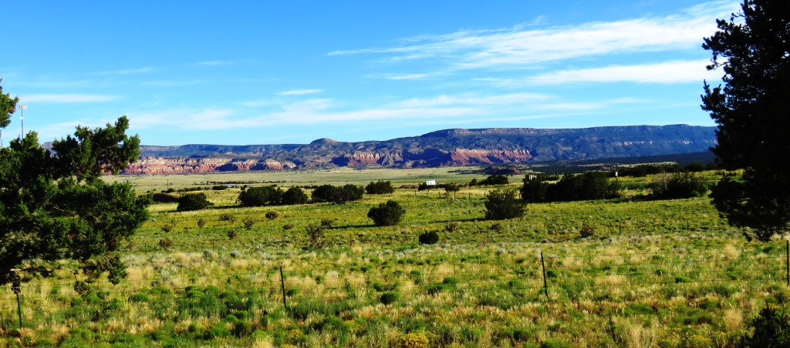
Lots of green because of the rainApproaching the Abiquiu Reservoir
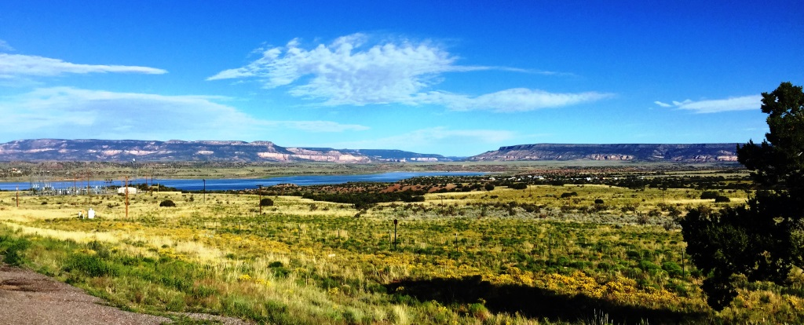
Lots of wires but still a nice rideWhen I got to the Abiquiu Reservoir I took a short break and took it all in.
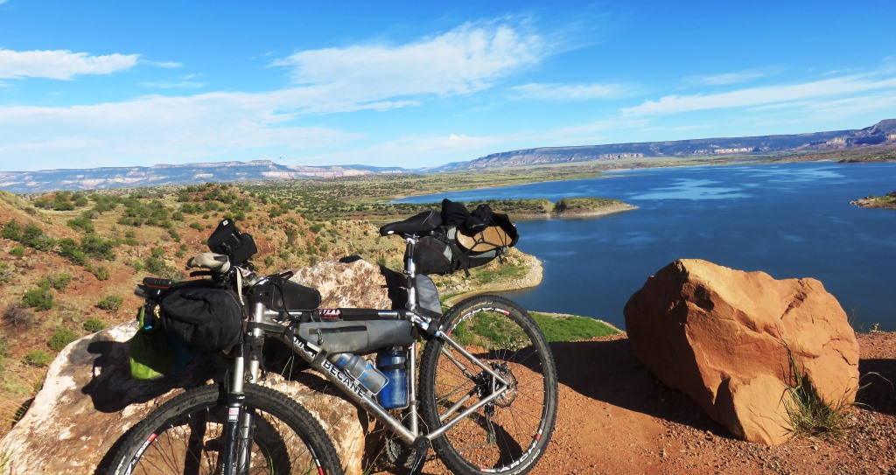
By now I had the bike where it needed to be.Abiquiu Reservoir and beyond
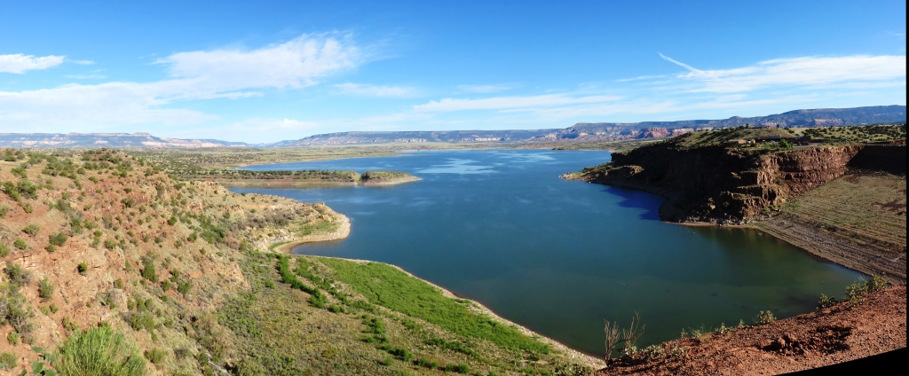
This was a really nice day

Taking it all in
Across the amazing colors of Northern New Mexico
West across the desert
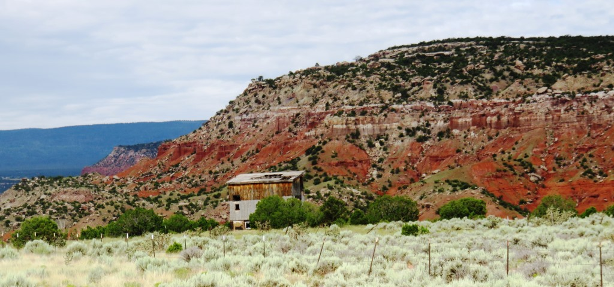
Lot of layers ...
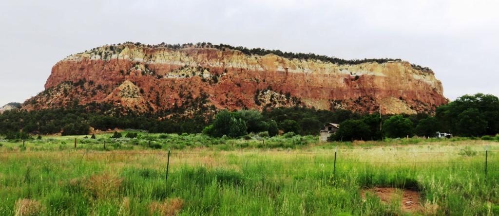
and colors
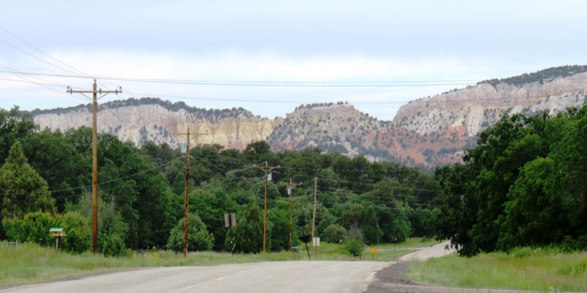
Coming out of the desert to CubaThis was an easy day because I didn't feel I should go beyond Cuba. I was done by early afternoon.
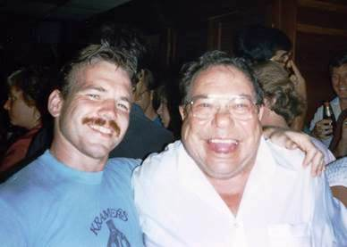
Nardi's Tavern - approx 1985Zav sent this picture as inspiration to push to the end. It always makes me laugh and remember that some days will live forever.
July 8 - 61 miles - Abiquiu to Cuba
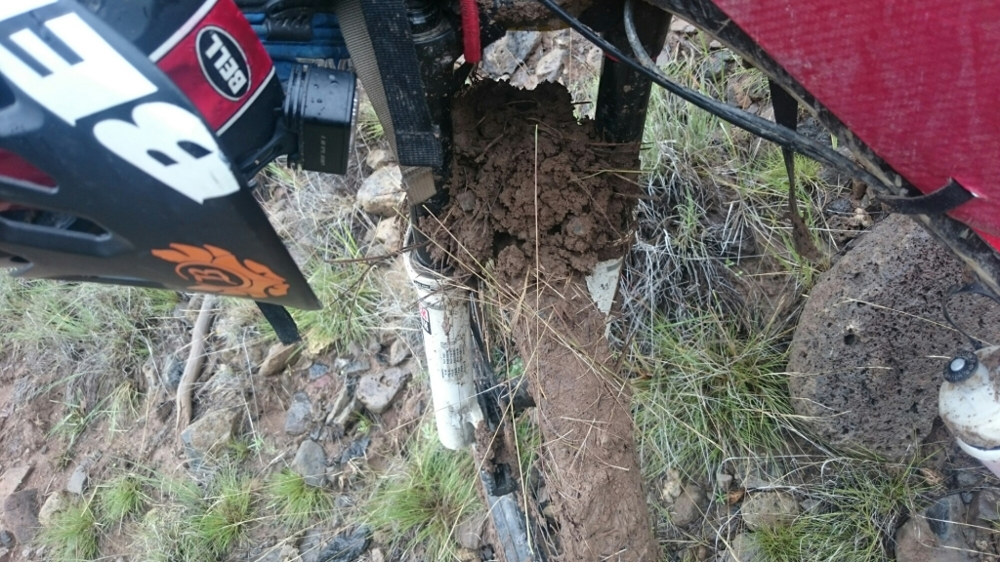
Mud and bikes don't mixThe picture is of Andrew's bike during a section of the TD trail in New Mexico. I had decided weeks before that the ride was challenging enough that I should try to avoid the muddy sections.
Text by Jim O'Brien . Photographs by Jim O'BrienTD on Flickr.